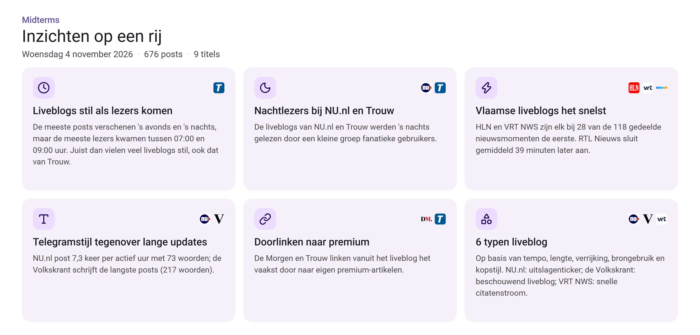
Wat zien we?
Om 04:05 brengt VRT NWS als eerste: “Amerikaanse media voorspellen dat Annie Andrews wint in South Carolina”. Binnen 44 minuten volgen nog 8 liveblogs met hetzelfde nieuws.
Zo’n reeks posts noemen we een gedeeld nieuwsmoment: posts van verschillende titels die binnen drie uur inhoudelijk op elkaar lijken (vergelijking van kop en begin van de tekst). Elke titel telt één keer per moment.
In totaal vinden we 118 van zulke momenten met samen 365 posts. De titel met de vroegste post is de eerste; de rest volgt met een achterstand in minuten.
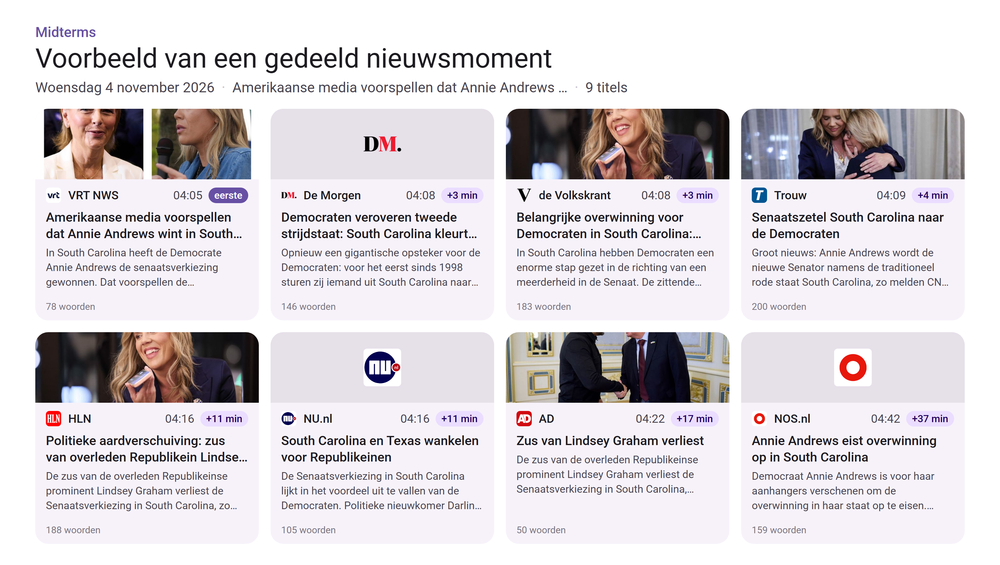
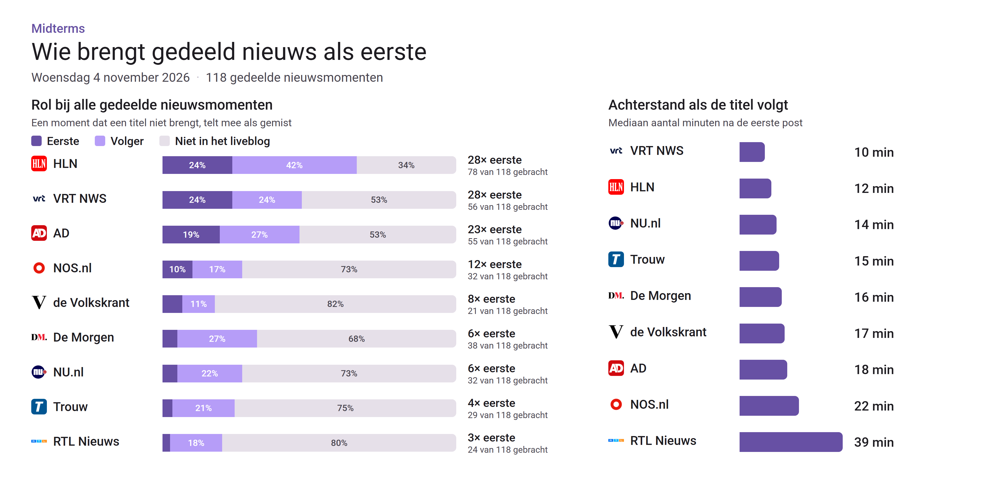
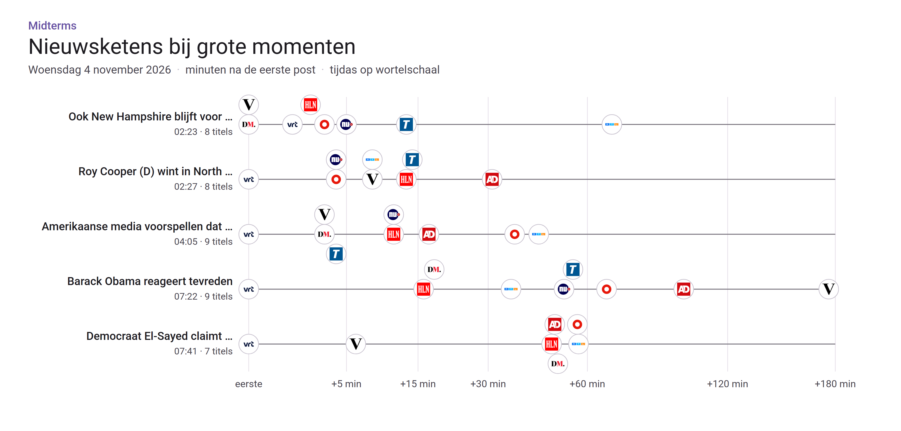
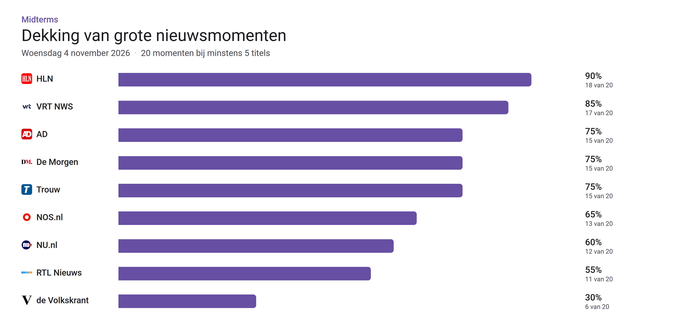
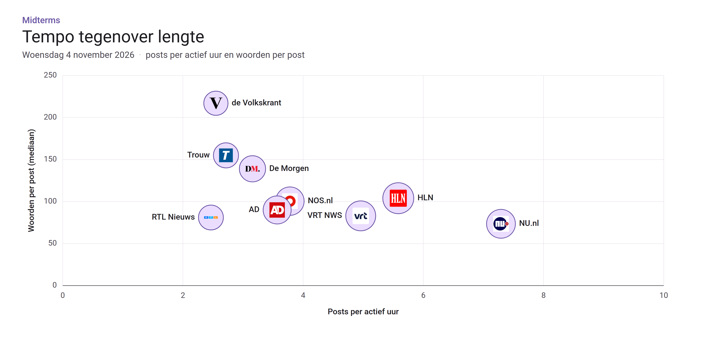
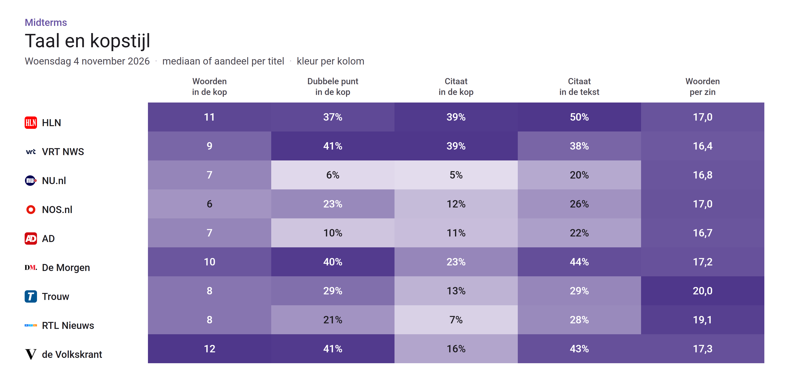
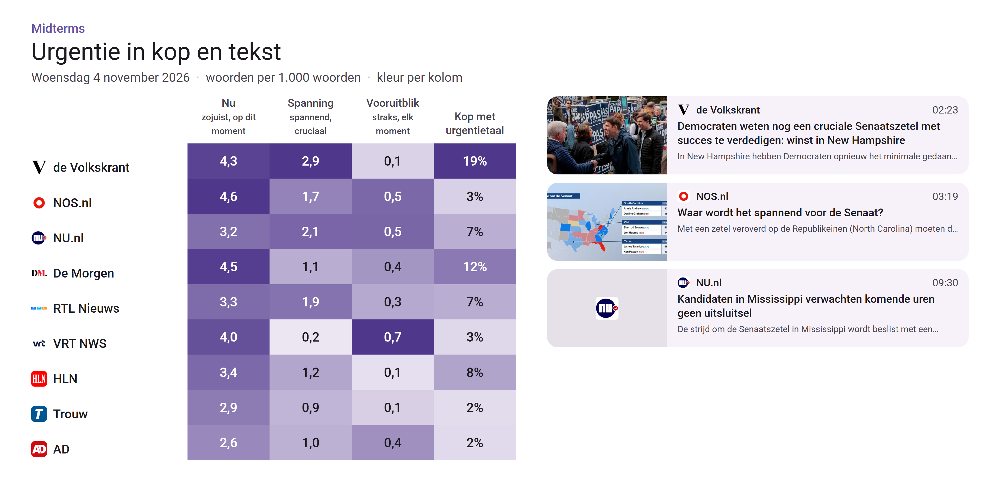
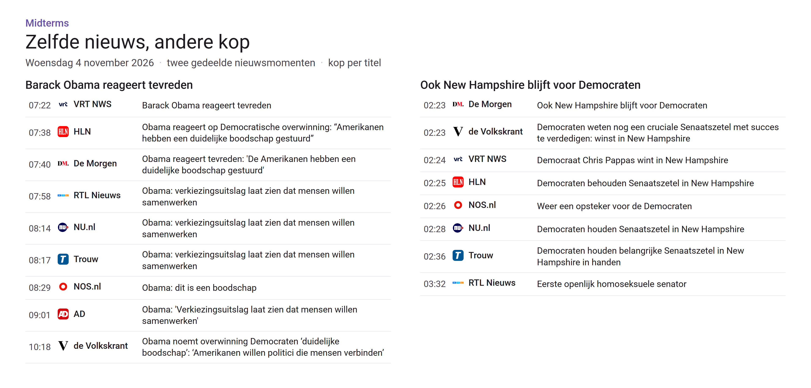
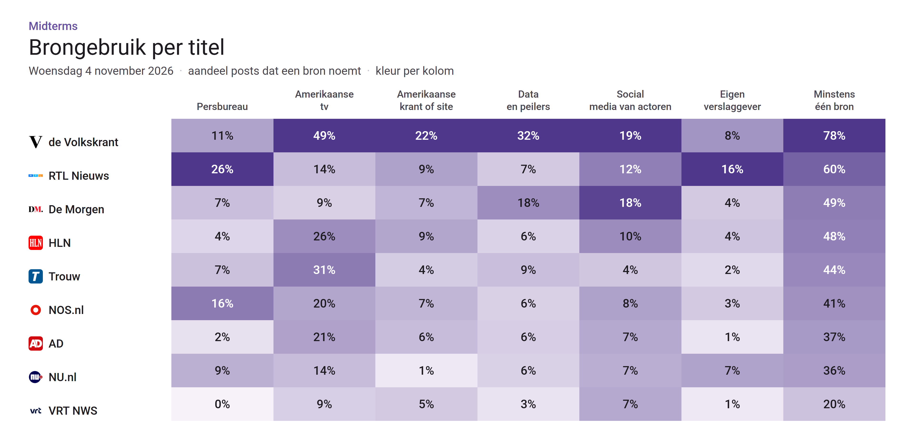
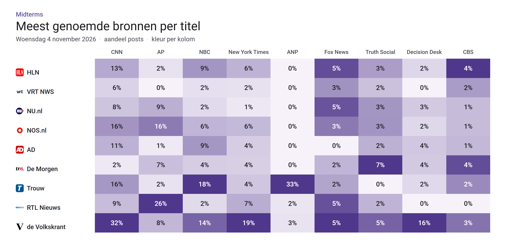
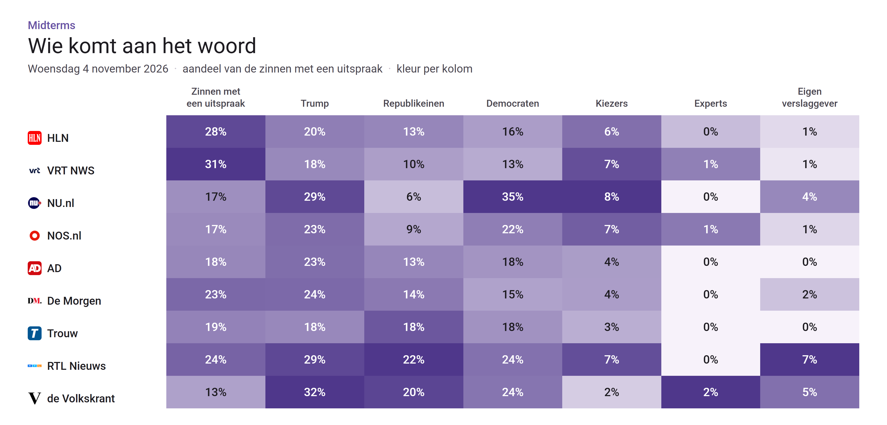
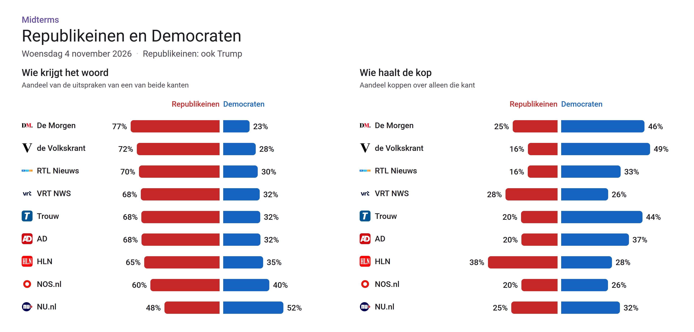
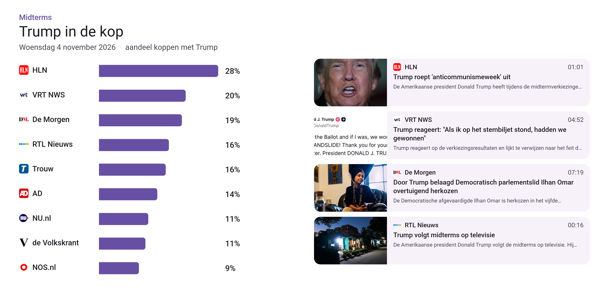
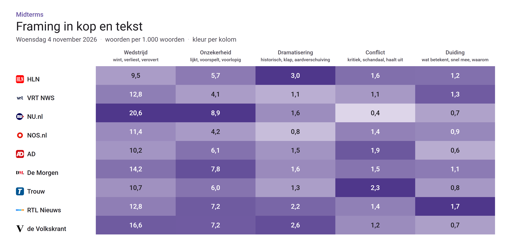
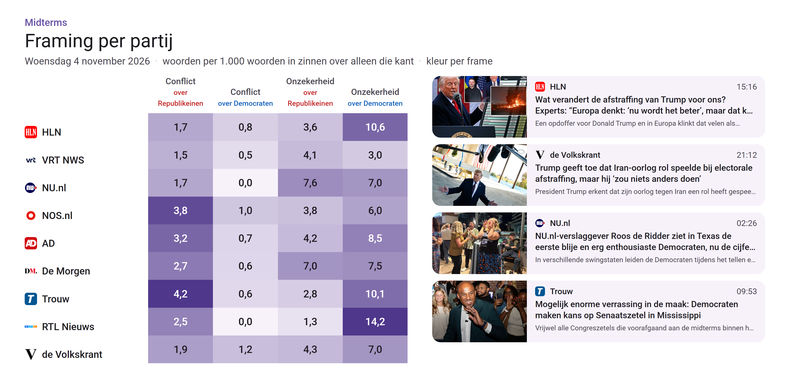
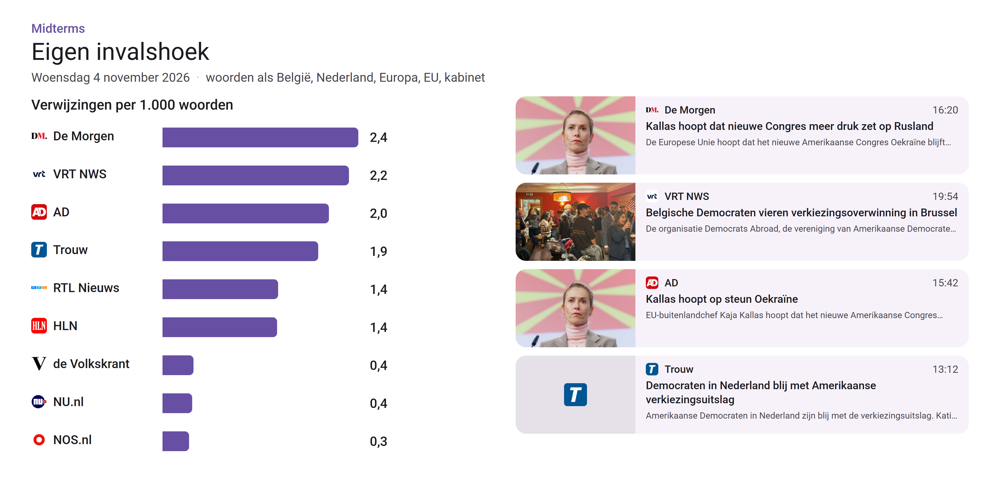
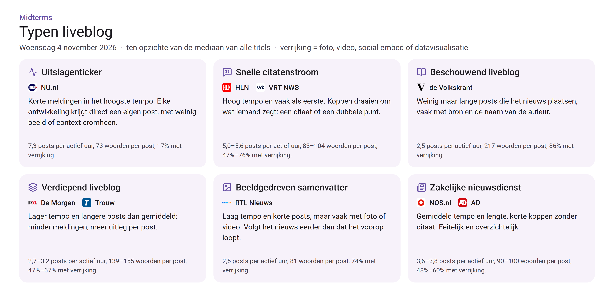
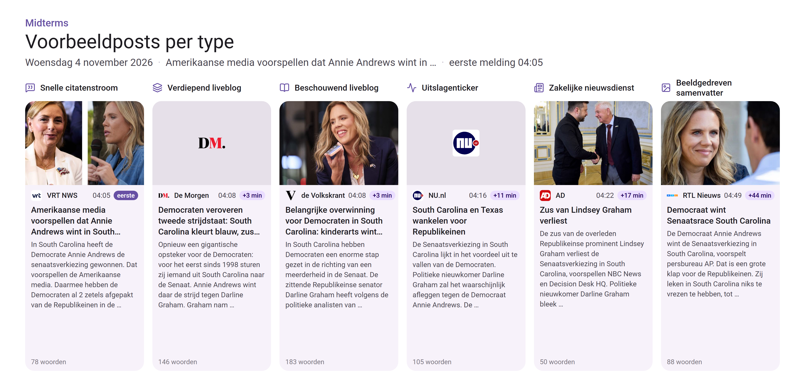
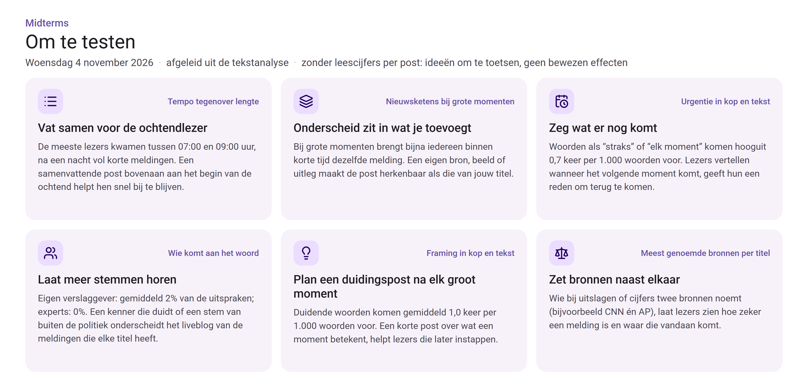
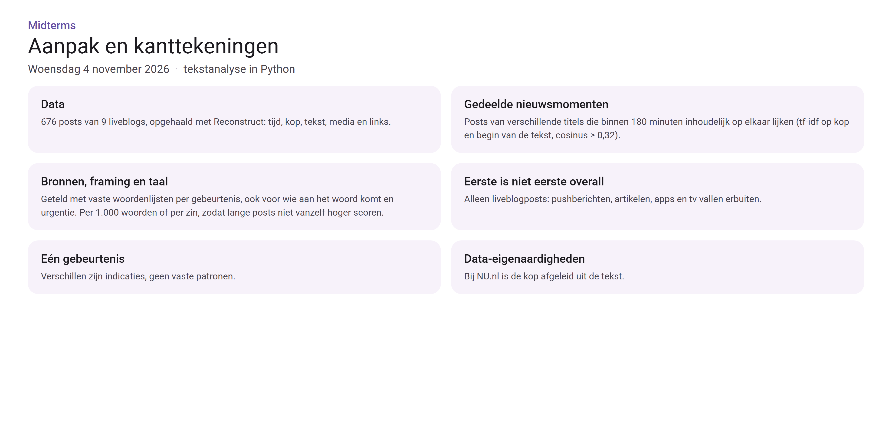